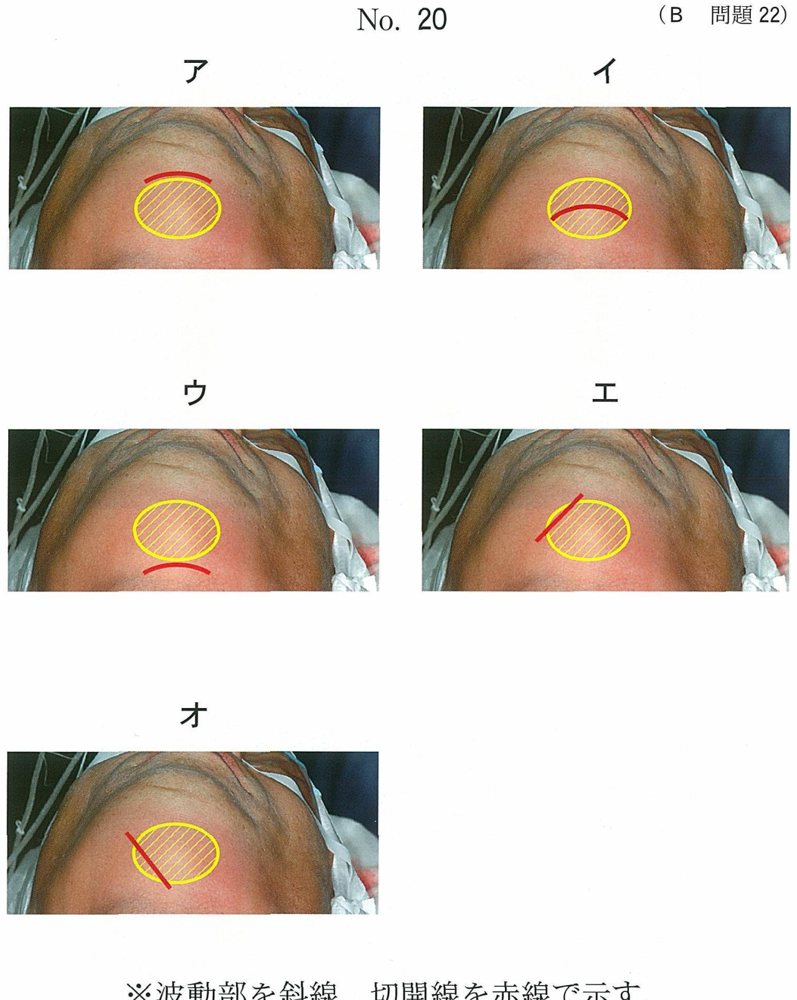

失活歯の漂白
失活歯（無髄歯）の漂白法
| 方法 | 特徴 |
|---|---|
| ウォーキングブリーチ法（WBT） | 髄室内に漂白剤を1週間程度填入 現在最も一般的な方法 |
| オフィスブリーチング | 診療室で薬剤適用＋光照射 |
| 併用法 | WBT＋オフィスブリーチング |
ウォーキングブリーチ法（WBT）★★
使用薬剤
- 30〜35%過酸化水素水 + 過ホウ酸ナトリウム粉末
- 混和してペースト状にして使用
- 緩やかな漂白：蒸留水＋過ホウ酸ナトリウムも可
術前処置で考慮すること
WBT前の確認事項（国試頻出）
- 根管充填状態：緊密な充填を確認（漂白剤の漏出防止）
- 象牙細管の走行：漂白剤が歯根膜を刺激しない位置まで根管充填材を除去
- 裏装：根管充填材上に約2mm厚のレジン系材料で保護
術式
| 手順 | 内容 |
|---|---|
| 1. 髄室の拡大 | 根管充填材・罹患歯質・着色歯質を除去 |
| 2. 裏装 | 根管充填材上にフロアブルレジン等で約2mm厚の保護層 |
| 3. 髄室壁処理 | 30〜35%リン酸で15秒処理（浸透促進） |
| 4. 患歯の隔離 | 歯肉にワセリン塗布、ラバーダム装着 |
| 5. 漂白剤填塞 | 髄室内にペースト状漂白剤を填入 |
| 6. 仮封 | 綿球＋水硬性セメント＋カルボキシレートセメントで二重仮封 |
| 7. 経過観察 | 1週間後に来院、目的の色調になるまで繰り返し（通常3〜5回） |
103B25
35歳の女性。上顎右側中切歯の変色を主訴として来院した。5年前に治療を受けたという。ウォーキングブリーチを行うこととした。初診時の口腔内写真（別冊No.23A）とエックス線写真（別冊No.23B）とを別に示す。
処置に際して考慮するのはどれか。2つ選べ。


a 歯肉の色調
b 根管充填状態
c 象牙細管の走行
d エナメル質の厚さ
e 歯周ポケットの深さ
b 根管充填状態
c 象牙細管の走行
d エナメル質の厚さ
e 歯周ポケットの深さ
正解：b, c
【解説】WBTでは、漂白剤が根尖部へ漏出しないよう緊密な根管充填を確認する（b）。また、漂白剤が象牙細管を通じて歯根膜を刺激し外部吸収を起こすリスクがあるため、象牙細管の走行を考慮して根管充填材の除去位置を決定する（c）。
術後の合併症と経過観察
歯根の外部吸収
WBT後に留意すべき合併症
- 歯根の外部吸収が最も重要
- 機序：漂白剤が象牙細管を通じて歯根膜を刺激
- 予防：根管充填材上の裏装、象牙細管の走行を考慮した除去位置
※歯肉炎、歯根破折、象牙質知覚過敏、エナメル質の着色はWBT後の主な留意点ではない
102B29
ウォーキングブリーチ後の経過観察で留意するのはどれか。1つ選べ。
a 歯肉炎
b 歯根破折
c 歯根の外部吸収
d 象牙質知覚過敏
e エナメル質の着色
b 歯根破折
c 歯根の外部吸収
d 象牙質知覚過敏
e エナメル質の着色
正解：c
【解説】WBT後に最も留意すべきは歯根の外部吸収。漂白剤（過酸化水素水）が象牙細管を通じて歯根膜を刺激することで生じる。定期的なX線検査で経過観察が必要。無髄歯なので象牙質知覚過敏は起こらない。
術後処置
- 目的の色が得られたら水酸化カルシウム製剤を1週間貼布（髄室の中和）
- コンポジットレジン修復は1〜2週間後に行う（接着強さ低下のため）
無髄歯漂白の適応症・禁忌症
適応症
- 変色した無髄歯（歯髄壊死、不完全な根管処置による変色）
- 唇・頰側面の形態回復を必要としない症例
禁忌・不適応
- 歯根未完成歯
- 歯頸部付近の歯質が薄い場合
- 重金属による着色（漂白効果なし）
まとめ：WBTのポイント
| 項目 | 内容 |
|---|---|
| 術前確認 | 根管充填状態、象牙細管の走行 |
| 使用薬剤 | 過酸化水素水＋過ホウ酸ナトリウム |
| 術後合併症 | 歯根の外部吸収 |
| 術後処置 | 水酸化カルシウム貼布、1-2週間後にCR修復 |